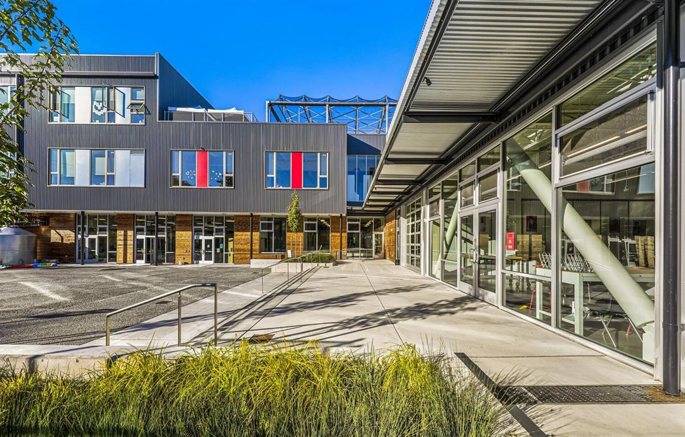

1. 주요 도시·지역과 국제학교
· 도쿄 (Tokyo)
아메리칸 스쿨 인 재팬(ASIJ, 조후·미국식 AP), 니시마치 인터내셔널 스쿨(아자부), 세인트메리즈 인터내셔널 스쿨(세타가야·남학교·IB), 세이센 인터내셔널 스쿨(여학교·IB), 브리티시 스쿨 인 도쿄(BST, 영국식), 아오바 재팬 인터내셔널 스쿨(IB 일관), 도쿄 인터내셔널 스쿨 등. 한국 학생 개별 안내는 ASIJ · 니시마치 · 세인트메리즈 · 세이센 · 아오바 재팬 글에 정리되어 있습니다.
· 요코하마 (Yokohama)
요코하마 인터내셔널 스쿨(YIS, IB 일관 — 개별 안내), 세인트모어 인터내셔널 스쿨(1872년 개교 — 개별 안내) 등. 도쿄 남부 출퇴근 가정이 많이 선택합니다.
· 간사이 (고베·오사카) 및 기타
캐나디안 아카데미(고베·IB), 오사카 인터내셔널 스쿨(OIS·IB), 나고야 인터내셔널 스쿨. 사이타마의 컬럼비아 인터내셔널 스쿨도 수도권 대안입니다.

국제학교 캠퍼스 (자료사진)
2. 커리큘럼 — IB·미국식·영국식이 모두 있습니다
· IB — 세인트메리즈·세이센·YIS·아오바·캐나디안 아카데미 등. PYP/MYP/DP 체계. 고등에서 IB Math AA/AI 선택, 내부평가(IA)·확장에세이(EE)·TOK가 점수의 큰 축.
· 미국식·AP — ASIJ 등. 알지브라 → 지오메트리 → 알지브라 2 → 프리캘큘러스 → AP 미적분 순서로 올라가고 GPA가 누적됩니다.
· 영국식·IGCSE/A-Level — BST 등. G10에 IGCSE, G11~12에 A-Level 또는 IB로 전환.
같은 도쿄 안에서도 학교에 따라 체계가 완전히 다르므로, 편입 시 커리큘럼 연결을 반드시 확인해야 합니다.
3. G1~G12 학년별 준비 로드맵
영어 리딩·라이팅 기초와 수학 영어 용어. 일본어 노출도 자연스럽게 시작됩니다. 한국어(모국어) 유지를 함께 챙겨야 귀국 후 적응이 수월합니다.
알지브라(Algebra)·지오메트리(Geometry) 시작. IB 학교는 MYP. 영어는 에세이 구조 훈련. 일본어는 이 시기부터 JLPT 급수로 관리하면 고등에서 여유가 생깁니다.
미국식은 GPA 누적 시작, IB는 DP 과목 선택 준비, 영국식은 IGCSE. 수학은 알지브라 2·프리캘큘러스, 과학은 물리·화학·생물 분화.
IB DP / AP / A-Level 본과정. IB 수학 IA·EE, AP 미적분, SAT/ACT. 일본 대학 진학 트랙이라면 EJU(일본유학시험)와 JLPT가 이 시기 핵심입니다.
국제학교 캠퍼스 (자료사진)
4. 과목별 준비 방법 — 전 과목 관리
알지브라 1·2 · 지오메트리 · 프리캘큘러스 · 미적분(Calculus) · AP Calculus AB/BC · IB Math AA/AI(HL·SL) · IGCSE/A-Level Maths · EJU 수학 코스 1·2. 영어 용어와 서술형 풀이를 함께 잡습니다.
리딩 · 에세이 라이팅·첨삭 · 문학 분석 · IB English A/B · 확장에세이(EE) · AP English · SAT/ACT · 대학 지원 에세이 · 면접(인터뷰).
물리·화학·생물 (IB/AP/IGCSE). 개념+영어 용어, 랩 리포트와 과학 IA 관리.
일본어 내신(IB Japanese B)·JLPT(N5~N1) · EJU 일본어·수학 — 일본어 과외 안내 참고. 한국어(IB Korean A)와 귀국 대비 한국 수학·국어 병행 관리.
5. 입학·편입 준비
· 입학시험 — 영어(리딩·라이팅), 수학 배치고사(알지브라·지오메트리 범위), 인터뷰, 이전 성적. 일부 학교는 MAP·WIDA 등 표준화 테스트를 사용합니다.
· 편입 — 도쿄 인기 학교(ASIJ·세인트메리즈·니시마치 등)는 대기가 흔합니다. 편입 시 수학 배치가 이후 IB/AP 과목 선택까지 좌우하므로 미리 준비하세요.
6. 일본의 현실 — 학원 인프라와 시차 0의 장점
도쿄에는 한인 학원이 있지만 대부분 한국 교과(내신·수능)와 일본 수험(EJU) 중심입니다. IB·AP·IGCSE 커리큘럼을 한국어로 다루는 곳은 드물고, IB 수학 IA나 EE까지 관리 가능한 선택지는 거의 없습니다.
대신 일본은 한국과 시차가 0입니다. 현지 방과 후 시간이 한국 강사진의 수업 시간과 그대로 맞아, 아이 학교(ASIJ의 AP인지 세인트메리즈의 IB인지)에 맞춘 1:1 화상 수업을 해외 어느 나라보다 안정적으로 운영할 수 있습니다.
7. 귀국 대비 — 최소 6개월 전부터
· 한국 학교 편입 — 국제학교에서 다루지 않은 한국 수학 교과의 빈틈을 메워야 합니다.
· 국내 국제학교 진학 — 채드윅 송도·NLCS 제주·SFS 등의 입학시험(수학 배치고사 + 영어 에세이 + 인터뷰) 준비.
· 재외국민 특례 — 체류 기간 요건과 서류는 특례입학 총정리에서 확인하세요.